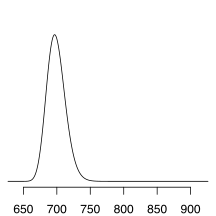

<!-- html table generated in R 3.6.3 by xtable 1.8-4 package -->
<!-- Sun Oct  4 12:24:20 2020 -->
<table >
<tr> <th> Model </th> <th> Posterior </th> <th> Prob. </th> <th> Bayes est. </th> <th> Mode </th> <th> 0.025 </th> <th> 0.975 </th>  </tr>
  <tr> <td align="right">  </td> <td align="right">  </td> <td align="right"> 0.22 </td> <td align="right"> 716.00 </td> <td align="right"> 713.00 </td> <td align="right"> 687.00 </td> <td align="right"> 752.00 </td> </tr>
  <tr> <td align="right">  </td> <td align="right">  </td> <td align="right"> 0.16 </td> <td align="right"> 704.00 </td> <td align="right"> 703.00 </td> <td align="right"> 680.00 </td> <td align="right"> 734.00 </td> </tr>
  <tr> <td align="right">  </td> <td align="right">  </td> <td align="right"> 0.08 </td> <td align="right"> 702.00 </td> <td align="right"> 699.00 </td> <td align="right"> 675.00 </td> <td align="right"> 737.00 </td> </tr>
  <tr> <td align="right">  </td> <td align="right">  </td> <td align="right"> 0.07 </td> <td align="right"> 699.00 </td> <td align="right"> 697.00 </td> <td align="right"> 674.00 </td> <td align="right"> 729.00 </td> </tr>
  <tr> <td align="right">  </td> <td align="right">  </td> <td align="right"> 0.05 </td> <td align="right"> 705.00 </td> <td align="right"> 703.00 </td> <td align="right"> 680.00 </td> <td align="right"> 736.00 </td> </tr>
   </table>
